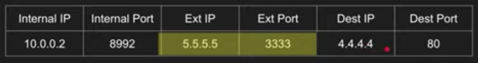

Project: Video calling application
Table of Contents
1. Objectives
1.1. Create an application which will set up an 1:1 video call.
Working outline (basic)
- TODO To set up a video call bewtween two users
one of them has to set up a call - i.e generate a call-id and share it with the other person he wants to connect with, using any other msging platform. Next, the other user will use this id to join into the call.
- TODO Leaving the call
When a meeting id is generated, a virtual space is created for two people to join in and have a chat, both people can join the space, or leave it an any moment.
- TODO Terminating the call
The person who is creating the call has a special power to terminate it. If both users have left the call for a specified time \(t\) then it auto-terminates
User functions to be implemented.
API connectivity
Video calling web-app has to integrate with other applications built by team members. So it has to has to have an api by which the team member can schedule an appointment, using their own application interface.
2. Technology Stack
- JS, HTML, CSS
- Webrtc
- Firebase/Setting up a STUN server
3. Topics deep-dive
3.1. Webrtc
Overview
- Stands for Web real-time communication.
- Find a Peer to peer path to exchange video and audio in a clear and efficient manner.
- Standardized API
- A want to connet to B
- A finds to find out all possible ways the public can connect to it.
- B finds to find out all possible ways the public can connect to it.
- A and B signal this session information via other means
- WhatsApp, QR, Tweet, Websockets, HTTP fetch
- A connects to B via the most optimal path. (a graph network structure)
- A & B exhanges their supported media and security.
- Key terms
- NAT
- STUN
- ICE
- SDP
- Signalling the SDP.
3.2. NAT
Overview
Figure 1: send data using NAT

Figure 2: recieve data using NAT
There are 4 kinds of NAT:
Full cone or One to One NAT
Packets to external IP:port on the router always maps to internal IP:port without exceptions.

Figure 3: Full cone nat
 Here we don't check if we know the person, sending the info ie, NAT table's destination ip and port doesn't
need to match with incoming ip packet's ip or port.
Here we don't check if we know the person, sending the info ie, NAT table's destination ip and port doesn't
need to match with incoming ip packet's ip or port.
- Address restricted NAT
- Port restricted NAT
- Symmetric NAT
3.3. STUN
Overview
- Session traversal utilities for NAT
- Tell me my public ip address/port through NAT
- Works for full-cone, Port/Adress restricted NAT
- Doesn't work for symmetric NAT
- Cheap to maintain
Figure 4: STUN When it works
3.4. TURN
Overview
- Traversal using relays around NAT
- In case of Symmetric NAT we use TURN
- It's just a server that relays packets
Expensive to maintain and run
3.5. ICE
Overview
- Interactive Connectivity Establishment
- ICE collects all available candidates (local IP addresses, reflexive addresses - STUN ones and relayed addresses - TURN ones)
- Called ice candidates
- All the collected addresses are then sent to the remote peer via SDP
onIceCandidiate and addIceCandidate
- To maintain the connection as new candidates come and go
- onIceCandidate tells user there is a new candidate after the SDP has already been created
- The candidate is signalled and sent to the other party
- The other party uses addiceCandidate to add it to its SDP
3.6. SDP
Overview
- Session Description Protocol
- A format that describes ice candidates, networking options, media options, security options and other stuff
- Not really a protocol but a format
- Most important concept WebRTC
- The goal is to take the SDP generated by a user and send it "somehow" to the other party
4. WebRTC demo
4.1. Ex outline
- A wants to connect to B
- A creates and "offer", it finds all ice candidates, security options, audio/video stream options and generates SDP, the offer is basically the SDP
- A signals the offer somehow to B
- B creates the "answer" after setting A's offer
- B signals the "answer" to A
- Connection is created!!.
4.2. Code outilne
What are we going to do-
- We will connect browsers (Browsers A and B)
- A will create an offer (sdp) and set it as local description
- B will get the offer and set it as remote description
- B creates an answer sets it as its local description and signals the answer(sdp) to A
- A sets the answer as its remote description.
- Connection established, exchange data!!
4.3. Example with text
Here well will make two browsers send text data between each other. Input code in browser console, to start a communication channel
Browser 1, initiator
const lc = new RTCPeerConnection(); // creating a data channel, a chanell we are gonna communicate through const dc = lc.createDataChannel("channel"); // when we recive a msg print the following dc.onmessage = e => console.log("Just got a message " + e.data); dc.onopen = e => console.log("Connection Open"); // before creating an offer, reprint sdp every-time new ice candidate is encounterd lc.onicecandidate = e => console.log("New ice candidate! reprinting SDP" + JSON.stringify(lc.localDescription)); // wait 12 secs? // create the offer (promise) lc.createOffer().then(o => lc.setLocalDescription(0)).then(a => console.log("set succesfully!")); // signal to peer 2
Browser 2, accepts the offer, and gives an answer
const offer = {paste spd data} const rc = new RTCPeerConnection(); rc.onicecandidate = e => console.log("New ice candidate! reprinting SDP" + JSON.stringify(rc.localDescription)); rc.ondatachannel = e => { rc.dc = e.channel; rc.dc.onmessage = e => console.log("new message from client!" + e.data) rc.dc.onopen = e => console.log("Connection OPENED!!!") }; rc.setRemoteDescription(offer).then(a => console.log("offer set!")); rc.createAnswer().then (a => rc.setLocalDescription(a)).then(a => console.log("answer created")); // Now signal the answer back to peer 1
Browser 1, accepts the answer, sets up the channel
const answer = paste_aswer_from_brower_2; lc.setRemoteDescription(answer); // pray and see if connection is opened // if connection opened, to send data dc.send("Hello, how are you?");
Browser 2, send data, after connection is opened
rc.dc.send("I am fine ThankYou!!");
4.4. Example with media
Send video and audio between two browsers. Same workflow as prev only difference being, we need to
save the stream using MediaDevices.getUserMedia() function and pass it to lc.addTrack(stream)
4.5. WebRTC Pros and Cons
Pros
- Peer to peer is great! low latency for high bandwith content.
- Standardized API I don't have to built my own.
Cons
- Maintaining STUNS and TURN sernvers
- P2P fails apart in case of multiple participants (discord case)
4.6. Set custom STUN and TURN server
- Serach public STUN servers
- coturn create your own STUN and TURN server github
const iceConfiguration = { iceServers : [{ urls: 'turn:turnserver.company.com:3478', username: 'optional-username', credentials: 'auth-token'}, { urls: "", username: "", credential: "" } }] } const pc = new RTCPeerConnection(configuration);
5. Resources
- WebRtc CrashCourse
- WebRTC basics blog by html5 rocks
- https://developer.mozilla.org/en-US/d
- https://developer.mozilla.org/en-US/d
- https://developer.mozilla.org/en-US/d
- https://tools.ietf.org/html/draft-iet
- https://support.frozenmountain.com/hc
- https://webrtcforthecurious.com/
- https://getvoip.com/blog/2013/02/27/s
- https://www.onsip.com/voip-resources/
- http://io13webrtc.appspot.com/#52